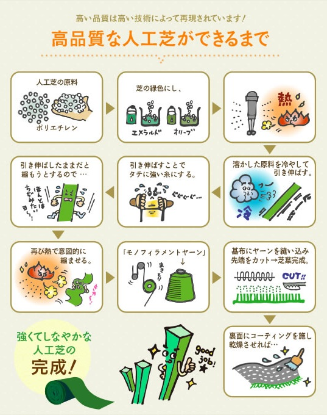
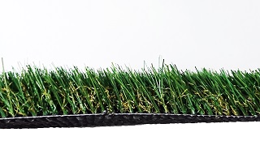
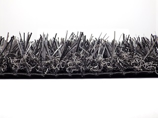
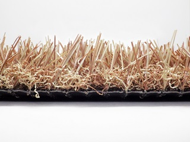
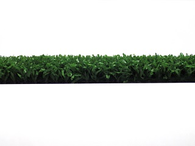
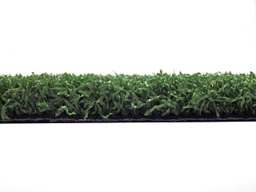
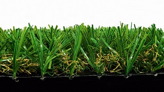
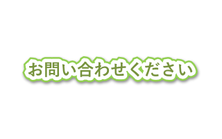

～ 芝人が選ばれる理由 ～
人工芝の販売・施工をおこなう「人工芝の芝人（しばんちゅ）坂戸店」。
オリジナルの人工芝と職人の確かな技術によって、これまでに多くのお客様にお喜びいただいてきました。
こちらでは、その選ばれる理由について詳しくご説明いたします。
高品質で低価格なオリジナル人工芝
芝人は素材にこだわり、FIFA認定工場で生産された高品質なオリジナルの人工芝を取り扱っております。そして、そこから大量仕入を行うことにより、低価格でのご提供を実現しています。
※芝丈30mmの場合
|
芝人の人工芝 |
ホームセンターＮ社の人工芝 |
|
|---|---|---|
| ストレートパイルの素材 |
ＰＥ（ポリエチレンモノフィラメント） |
ＰＰ（ポリプロピリン） |
| 手触り | やわらかい | 固い・痛い |
| 紫外線 | 強い | 弱い |
| 劣化 | しにくい | しやすい |
| 融解温度 | 高い | 低い |
| 耐候性・耐光性 | 高い | 低い |
| 運動 | ＯＫ | ＮＧ |

芝人が取扱う人工芝
| Sターフ30mm | SターフCOOL |
|---|---|

|
 |
| グレー | ラテブラウン |
|---|---|
|  |  |
| パターゴルフマット8mm | パターゴルフマット12mm |
|---|---|
|  |  |
| SB30CP1 | その他 |
|---|---|
|  |  |
しっかりとした下地作り
人工芝の設置は下地作りが命ともいえます。
土のまま固めた下地に人工芝を設置すると雨でぬかるみやすく、下地が少しずつ歪んでしまう原因となります。下地が歪むと、その上に設置した人工芝もたわんでしまい、景観が悪くなってしまったり、最悪の場合めくれあがって剥がれてしまいます。
そのため当社の下地作りでは、地面を平にした後、コンクリート質の砂を入れて重機で転圧して固めます。これにより、平らで強度の強い下地ができ、ＤＩＹとは比べ物にならない耐久性を持った人工芝が実現できます。
継ぎ目の見えない確かな施工技術
当社の一番のこだわりは景観の良さです。
人工芝同士の接合部分では、塩化ビニールシートと強力なボンドを使用し、継ぎ目の防草シートの傷みを防ぐことで、耐久性を保てるようにします。
使用する人工芝の品質はもちろんのこと、確かな施工方法により継ぎ目の見えない美しい人工芝を提供いたします。